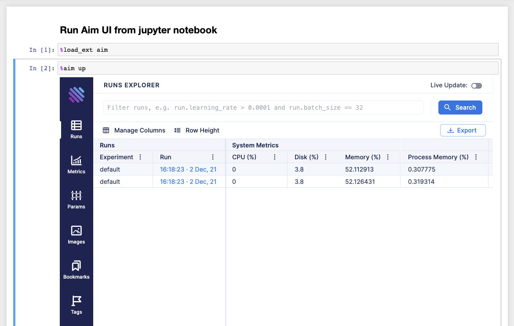

Run Aim UI on Jupyter Notebook
Start your notebook with the following code to install Aim:
!pip install aim
Next, initialize a new run and save some hyperparameters:
from aim import Run
run = Run()
run['hparams'] = {
'learning_rate': 0.001,
'batch_size': 32,
}
Note
Do not forget to call run.finalize() once the training is over.
After tracking runs with Run,
run the following commands in the notebook to run the Aim UI:
Load Aim extension for notebooks:
%load_ext aim
Run
%aim upto open Aim UI in the notebook:
%aim up
